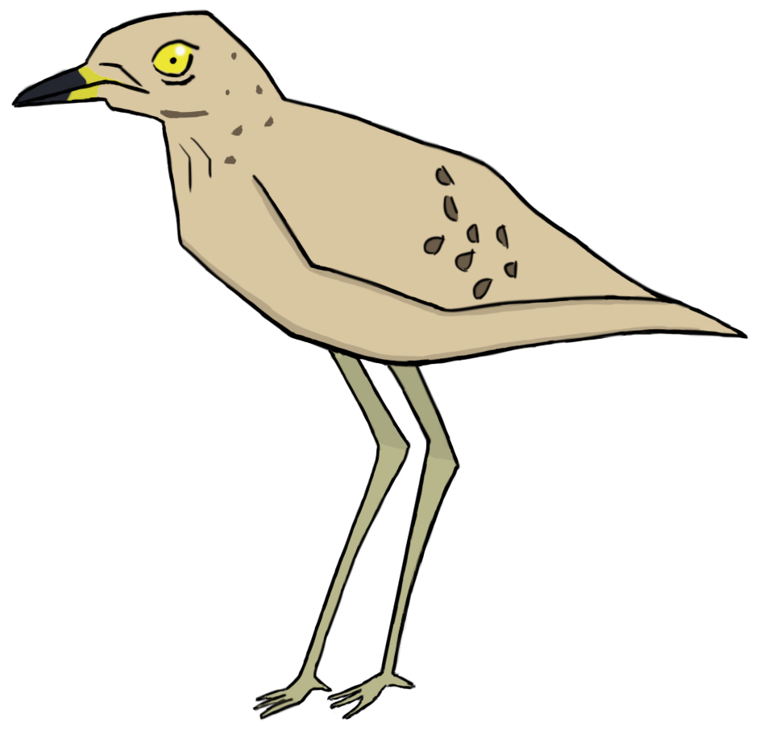

<!DOCTYPE html>
<html lang="en">
<head>
	<meta charset="UTF-8" />
	<title>Media Queries</title>
	<link rel="stylesheet" href="style.css">
</head>
<body>
	<header>
		
	</header>
    <div class="button">
        <a  href="index.html">
            
        </a>
    </div>
    <main>
        <aside class ="left">
            
            
            
            
            
            
        </aside>
        <div class ="middle">
            
        </div>
         <aside class ="right">
            
            
            
            
            
            
        </aside>
    </main>
    <footer>
         <div class="footertext">
        <h1>
        Safari in 5 is a interactive map which presents the African Savanna from the comfort of your own home
Including the majestic visuals of the savanna, meaning animals such as The Nile Crocodile, The Black Rhino, The Infamous Hippo and all other kinds of exotic animals</h1>
        </div>
    </footer>
</body>
</html>